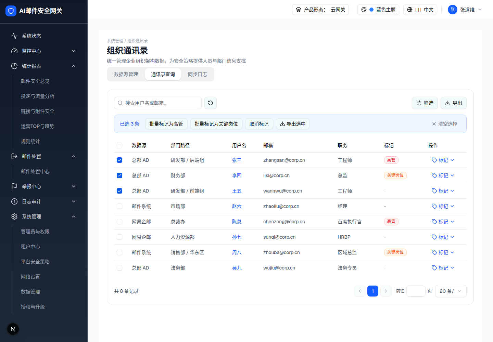
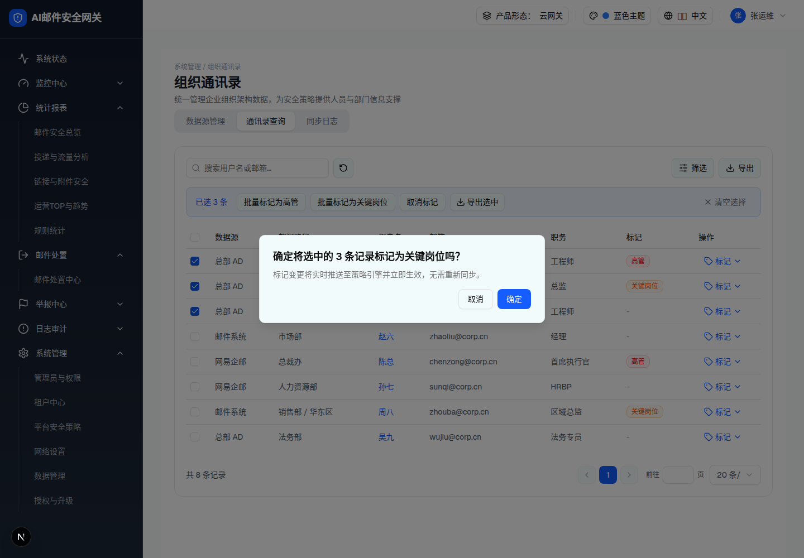
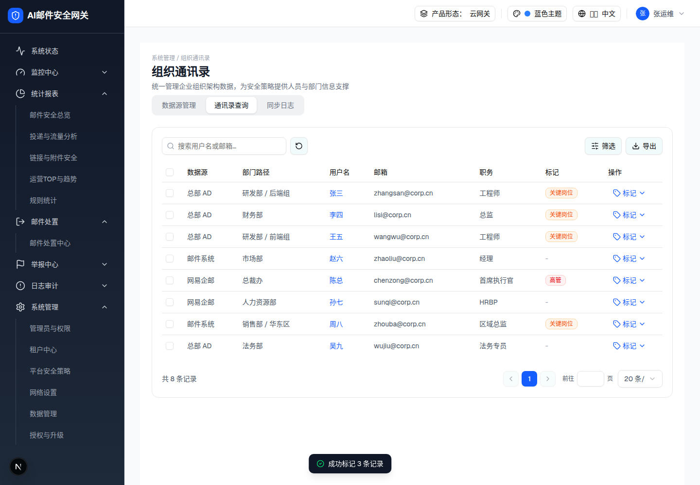

| 所属组件 | 2.3 通讯录查询 Tab |
| 触发路径 | 勾选 ≥1 行 → 批量操作栏浮出 → 点击批量按钮 → AlertDialog 二次确认 → 确定应用 |
下方为「勾选 3 行」时的批量操作栏快照与确认弹窗快照（标题实测「确定将选中的 3 条记录标记为关键岗位吗？」）。预览可操作：弹窗「取消」关闭 /「确定」出 toast「成功标记 3 条记录」。完整的勾选→浮出→应用闭环在主文件层级 0 预览内可实际操作。
标记变更将实时推送至策略引擎并立即生效，无需重新同步。



| 元素 | 规格（浏览器实测） |
|---|---|
| 批量操作栏 | 蓝底 border-blue-200 bg-blue-50，位于工具栏与表格之间（不遮挡表头）；「已选 N 条」蓝字 |
| 按钮 | 批量标记为高管 / 批量标记为关键岗位 / 取消标记 / 导出选中（Download 图标）—— 均 outline h-8；右侧「清空选择」ghost 灰字 + X 图标 |
| 确认标题 | 标记：「确定将选中的 N 条记录标记为{高管|关键岗位}吗？」；取消标记：「取消选中的 N 条记录的标记？」 |
| 确认描述 | 「标记变更将实时推送至策略引擎并立即生效，无需重新同步。」（与 spec §5.3「实时推送」一致） |
| 确定后 | 批量更新徽章 + toast「成功标记 N 条记录」/「已取消 N 条记录的标记」+ 清空选择 |
| 跨页 | 选择用 Set 跨页保留；无「（共 Y 页）」提示，§9-D10 |
| 比对项 | demo 实际 DOM | 嵌入的 HTML | 是否一致 |
|---|---|---|---|
| 批量栏根节点 | div.border-blue-200.bg-blue-50 | 同（b3 快照） | 一致 |
| 批量栏节点数 | 15 | 15 | 一致 |
| 确认弹窗根节点 | [role=alertdialog] | 同（b4 快照，规格侧中和居中定位） | 一致 |
| 确认弹窗节点数 | 7 | 7 | 一致 |
| 应用后 toast | 「成功标记 3 条记录」（b5 快照 [role=status]） | 预览「确定」触发等文案 toast | 一致 |